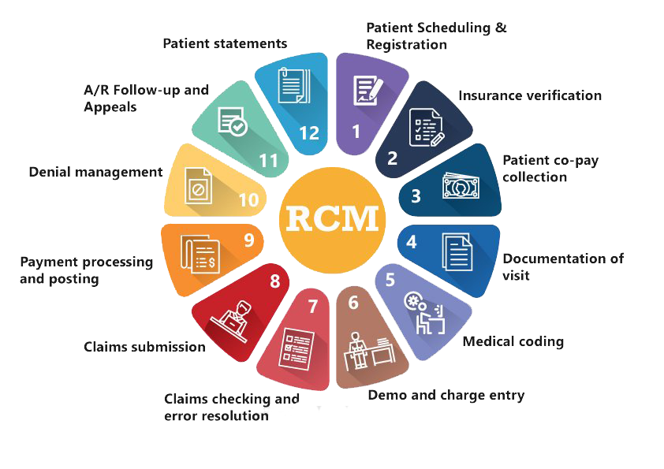

Arm Fox Healthcare has wide experience in providing offshore revenue cycle management services to hospitals and other healthcare practices in the US and around the world. Our comprehensive RCM services aim to reorganize your revenue cycle model to make it more efficient, quick and adaptable. We combine the power of our team, experience, knowledge, process and technology to maximize your chances of getting paid more without the hassles of delays and significant investments.
Keeping pace with a rapidly changing reimbursement model is a constant challenge for your healthcare revenue cycle process. Our healthcare RCM process helps you to remodel your revenue system to weather any storm. We bank on a streamlined practice workflow and optimized time management process to make your hospital revenue cycle withstand the highs and lows of regulatory changes. At the same time, we tap into the expertise of a highly specialized team to help you identify areas of under-performance, and unrealized reimbursement opportunities
Complete Range of RCM Outsourcing Services Provided by Arm Fox Healthcare Revenue Cycle Management Company-
Our revenue cycle management outsourcing services is geared towards more than 80 specialties, covering the entire healthcare revenue cycle operations from claim creation, quick submission, aggressive follow-up, denial management, appeals, payment posting and reporting to help you get paid 30% more, 45% quicker.
Hospitals and other healthcare practices have benefited by outsourcing following revenue cycle management services to us:
Patient Demographics Entry
We collect and verify the patient demographics received during the patient visit. In case, the patient is already registered in the medical billing system, new information is verified and updated swiftly.
Insurance Verification Process
Our insurance eligibility verification process includes-
Charge Entry Services
A highly trained team of medical billing professionals handle charge entry process as follows-
Electronic Claim Submission
We give utmost importance to the privacy and security of patient data and ensure that claims are only transmitted electronically. This reduces processing delays and ensures high readability, thereby assuring that no claims are rejected due to illegibility.
With electronic claim submission, tracking claims become easier, corrections can be made instantaneously and there won’t be any lag in receiving carrier confirmation reports, all of which will go a long way in avoiding costly rejection.
Payment Posting
We post all the payments received from patients and insurance companies to the patients’ accounts in the clients billing system. Once this is done, the posted payments are balanced against the deposit slips and checks are done for any inaccuracies or underpayment to ensure accuracy in payment.Checks and balances are also carried out on electronic posting of payments into the billing software and necessary documents related to EOB (Explanation of Benefits) are stored for future reference.
Denial Management
We understand that data plays a crucial role in plugging the torrent of unpaid claims. Hence we have made data analysis an integral part of our denial management services and ensure that every claim that is being denied by your payers is thoroughly scrutinized. Leveraging this level of intelligence, our denial management specialists can easily spot and fix the issues that are leading to the denials (whether it be issues with the claims or issues with the payers) and stop the stream of unpaid claims into your hospital revenue cycle. Once we do this, you can expect an inflow of additional 20% to 30% of revenues into your healthcare practice.
Accounts Receivable Management and Follow Up
ARM FOX’ AR management team can address every possible difficulty that can affect cash inflows to your organization. Our goal here is to collect every penny owed to you as quickly as possible and plan to achieve this by accelerating cash flows and reducing the AR days — by streamlining the medical claim submission process, increasing clean-claims rate, carrying out proper root-cause analysis of claim denials and ensuring regular follow-ups with insurance companies as well as patients for outstanding dues and payments.
Our outsourced Accounts Receivable management solutions also include the following optional services:
Medical Coding Services
Our experienced and AAPC certified coders excel in providing the following outsourced medical coding services:
In addition to the standard RCM services offered by healthcare revenue cycle management companies, here are some of the services that differentiate Arm Fox apart from the rest:
Revenue Cycle Management Process — Key Differentiator that Sets Us Apart from Other RCM Companies
When hospitals outsource revenue cycle management services to us, they get access to a well-designed sequential RCM process that helps them to maximize their revenue cycle.
The steps involved in our hospital revenue cycle management solution include:

Patient Scheduling and Verification
The process begins with patient scheduling and having it on the right track keeps you moving in the right direction. To ensure this we employ skilled front-desk staff with adequate experience in scheduling visits and verifying and submitting important patient-related information.
Streamlined Documentation
During this stage we streamline the billing and collection process with clinical documentation, charge collection, pre-billing edit, electronic claim processing, document image retrieval, etc. The entire process is handled with great care and attention to details.
Complete Coding and Billing
This is the most crucial phase of the workflow. Our coders handle all medical coding specialties, including radiology and anesthesiology in keeping with ICD-10 coding standards. All our coders are certified (CPC, AHIMA, etc. certified) and so we guarantee accuracy of the highest order.
Complete Denial Management
In the event of a denial, we carry out proper analysis to identify the root cause of denials. This greatly helps us reduce future denials. We are experts in analyzing denials, timely filing of denial appeals and following up with payers to rebilling.
Comprehensive Accounts Receivable Management
We have a well-established process to reduce accounts receivable resolution time by at least 30%. Our process analyzes the reasons for delays, based on which we build a solution to reduce time for collections.
Healthcare Analytical Solutions
We enable you to make better-informed decisions through detailed, real-time reports and forecasts. You get access to the reports on any computer or mobile device.
We are a revenue cycle management company specialized in operating with the following software to streamline your revenue process:
When you choose Arm Fox Healthcare, you’ll partner with a revenue cycle management company focused on your financial interests and collecting the maximum revenue you’ve earned.
Medical Billing has become the crucial part of revenue management for the healthcare service provider and hospitals. Millions of dollars are lost annually due to underpricing, coding errors, missed charges and un-reimbursed claims. ARMFOX’s medical billing service enables to eliminate these losses and accurately process the medical billing. Our professional approach and expertise always help our client by freeing with the tedious tasks of billing and follow-up function. ARMFOX’s medical billing service incorporates the latest technological and software developments and is very user-friendly. Medical Billing service is customized to meet individual client’s specific requirements.
Data entry - We obtain information from the provider and/or practice and enter this information into our database.
File claims - Most claims are filed electronically and only a few go on paper. This is dependent upon the insurance carrier the claims are going to.
Statements - are mailed out from our office on behalf of the facility. The protocols of statements and collections are done specifically to client's specifications.
Payments - as we receive payments and explanations of benefits from the client, we post these into our database. Each EOB will be audited for correct payment and/or benefits.
Reports - are done on a monthly basis. Because each provider and/or practice is different, we are always open to customizing reports on client's requirements.
Medical billing is a serious business in this day and age of medical practices. Without the proper knowledge of medical billing and reimbursement methodologies, providers and practices will not receive the proper reimbursements, if any reimbursement at all. ARMFOX can help to manage the billing process professionally and enhance your revenue generation.
We have expertise in Demographic and Charge entry service for many Specialties ranging from General Practice to more complicated specialties. We provide demographic identification and verification as patients register for healthcare services.
Patient Demographic Entry Services - Individual patient details are cataloged in billing software. The entries consist of Patient Demographics, Insurance, Employment and sponsor details.
Patient Demographic Update Services - This service consists of verifying patient information, registered in the billing software with the current information and update if necessary.
charge entry services - Our Charge entry Service consists of entering CPT codes, ICD codes, modifiers and other related information into the Billing Software.
The claims submission to insurance company proceeds electronically after demographics and charges are entered into the billing software. Speeding up the reimbursement and reducing the claim rejection.
ARMFOX has two levels of checks for claim processing. This reduces underpayments and denials of claims substantially and provides prompt and accurate settlement of claims.
Stage I - Our quality assurance team reviews each and every entry of demographic and charges fields in billing software. This process itself reduces 99% of the errors. The audit is conducted ascertaining maximum accuracy. We audit each and every field in demographic and charges.
Stage II - In this stage of quality audit entries are randomly checked for errors. The fields and the entries such as patient name, DOB, insurance ID and others are verified for Demographic accuracy. Charge Entry checkup includes fields such as CPT codes, ICD codes, modifiers, service provider and referring physician. Claims are then submitted electronically to the insurance company.
Cash Posting. ARMFOX’s professional Cash posting Service delivers account creation and payment posting service for each individual patient record and effectively lowers the overall cost of Healthcare Providers. Recording and managing of cash posting service require expert and dedicated human skills and innovative technology. Our highly skilled and experienced executives do Insurance payment posting, Self-pay posting and Denial posting, maintaining high levels of accuracy and confidentiality.
Our success in cash posting service has been driven through the successful assimilation of technology and customer focus. We have constantly invested in technology and experienced manpower. Our solutions have increased productivity and reduced equipment, manpower and infrastructure costs.
Insurance payment posting. Payment posting service consists of posting primary insurance payments, adjustments and transfer co-insurance to secondary insurance (if available) or patient. Posting of secondary insurance payment is also done by us.
Self-pay posting. Self-pay posting service consists of posting payments made by patients to the healthcare provider.
Denial posting. Claims needing resubmission that is claims denied by insurance are checked for all necessary documents like Medical records, Referral, Authorization etc. and resubmitted.
Quality process. Our quality assurance team reviews cash posting transactions. Checks are done to validate the fields such as check number, co-insurance transfer, and adjustment. Denial and re-submission of claims posting service are very important as it involves a specific time period within which claim has to be re-submitted. Our quality team assures that all denial and re-submission of claims posting is done within time and without missing any record including all supporting documents and information.
Reports - The reports regarding transaction volume (Number of line items received and submitted by us) are provided to clients as part of the service. These reports are generated in Daily, Weekly/Fortnightly, Monthly based on the customer's preference
According to industry sources, 75% of all claim denials are because a patient is not eligible for services billed to the insurer by the provider. Often, a patient would be ineligible for benefits because his or her policy has been terminated or modified.
ARMFOX can help practices dramatically reduce their accounts receivable cycle and increase revenue, by significantly reducing the impact of ineligibility, and increasing the number of "clean" claims that are sent to insurers (i.e., claims that are both complete, and are only for patients who are eligible for benefits). Unfortunately, eligibility verification is one of the most neglected elements in the revenue cycle.
In the absence of proper eligibility and benefits verification countless downstream problems are created; delayed payments, rework, decreased patient satisfaction, increased errors, and nonpayment. To avoid these problems, ARMFOX provides a remotely hosted Centralized Eligibility Unit for Hospitals and Faculty Practice Plans. The solution consists of ARMFOX deploying staff, technology, management and expertise with the objective of delivering high-quality cost-effective patient insurance eligibility and related services.
Improve Account Receivable Cycles (reduce Account Receivable Days)
Increased number of clean claims
Increase cash collections by reducing write-offs and denials
Receive Schedules from the Hospital via EDI, email or fax
Verify coverage on all Primary and Secondary (if applicable) Payers by utilizing sites like WebMD, Payer Web Sites, Automated Voice
Responses and phone calls to Payers
Contact patient for information if necessary
Provide the client with the results which include eligibility and benefits information such as member ID, group ID, coverage end and start dates, copay information and much more.
Obtain Pre- Authorization Number
Obtain the referral from PCP
Enter/update Patient demographics
Remind patient of POS collection requirements
Inform client if there is an issue with coverage or Authorization
Medicaid Enrollment
Eligibility verification defines who can render what care and under what circumstances. As such, ensuring that patients are eligible for services before care is rendered reduces rework of claims and alerts providers and patients to their options.
Our experienced Medical Coders are professional, skilled, and well versed in international coding practices. They constantly develop and refine internal compliance of contract ICD, CPT coding resources that meet the needs of the client. Our Team leaders are certified by the AAPC (American Association of Professional Coders) and offer state- of-the-art surgical, procedural and Diagnostic Coding across major medical specialties. Our medical coding company follows the coding process through a structured methodology that has worked well for large US clients.
We use the most up to date books and software like CPT, ICD-10, HCPCS, C++ edit to keep in touch with the constant changes in the coding world.
We follow HIPAA regulations in order to assure turnaround time .
Our dedicated professionals work under the AHIMA rules
Our coding staff has received extensive training under coding experts in the US
Certified coders monitor their work regularly and external coding and compliance experts periodically audit the department.
The coder determines the code to be used following each patient encounter. An AAPC Coder is extremely careful while coding for patient records. Utmost attention is given to quality to get reimbursement from the Insurance Company for the services rendered by the physician.
Our coders are skilled and provide high-quality results within the stipulated period of time for multi-specialty clients like Cardiology, Radiology, Neurology, Infectious Diseases, Internal Medicine, Pathology, and Oncology. ARMFOX specializes in surgical coding. The benefits we offer are:
You get clean claims and fewer denials.
We guarantee 98% accuracy and compliance with all government regulations.
Transparency in the coding methodology gives you access, produces consistency, and eliminates the risk of errors.
You receive regular feedback on coding changes, front-office documentation practices, and periodic reports, such as utilization reviews, case-mix review, and coding-related denial analysis.
You eliminate recruiting and training, reduce labor costs, and improve accuracy through our high-quality operations.
CPT and HCPCS coding - We code for surgery, lab and other tests based on the guidelines of AMA and CMS.
ICD coding- We do ICD coding related to the CPT and HCPCS codes based on AMA and CMS guidelines .
Our medical coding company has highly skilled coders with proven ability in giving high-quality results within set deadlines, for multiple specialties like
Our coders are proficient with:
CPT, ICD-10, and HCPCS coding across various specialties
Insurance and governmental regulatory requirements
Payer-specific coding requirements
Software like ENCODERPRO and CODERITE
The coding process begins when an operative report or charge sheet is batched and arrives on the desk of a coder. His job is to extract information from this Physician’s report on the charge sheet and code it according to specified guidelines
ARMFOX’s certified medical coders handle Procedural and Diagnostic Coding using references such as ICD-10-CM, LMRP, CPT Assistant, and HCPCS Level II. Here’s what happens:
After a patient visits a physician, a chart is prepared and given to Medical Coders, whose job is to:
Read the chart
Match the problem with its corresponding numerical code from the most current ICD-10 (International Classifications of Diseases) Book
Assign the proper diagnosis code with its numerical code from the CPT (Current Procedural Terminology) Book
The Coding team checks the compatibility of the diagnosis with the procedure code.
These two codes (Procedural and Diagnostic codes) and any modifier codes that may be needed to better describe the medical problem and its treatment are placed on a patient encounter form or super bill. The patient’s chart is then re-filed and the encounter form/super bill is given to a medical billing team.
For billing purposes, the use of the ICD codes, when juxtaposed with CPT codes, tells the payer
What service has been provided
Lists the diagnosis, symptom, complaint, condition or problem (e.g., the reason for performing the service).
This information is essential for accurate, timely and optimized third-party reimbursement.
Certified coders regularly monitor the work of our coders and external coding and compliance experts periodically audit the coding department.
ARMFOX’s main advantage over other peers in this industry is that there is increased accuracy in code selections causing a smoother billing process with quicker and better reimbursement.
Our experience and technological innovations ensure optimal revenue to physicians and patients.
Our AAPC Certified Coders follow set guidelines and procedures when they code for the patient records for optimized third-party reimbursement. The physician and patient get maximum reimbursement from the Insurance Company as the services rendered by the physician are accurately reflected in the medical codes in the super bill, resulting in fewer errors and claims denials.
The result is better collections for physicians and hospitals and fewer missed opportunity costs.
Transparency in our coding methodology gives you access, produces consistency and eliminates the risk of errors.
Clients receive regular feedback on coding changes, front-office documentation practices, and periodic reports, such as utilization reviews, case-mix review, and coding-related denial analysis. The reports indicate the charts received from the client, the ICD and CPT codes, the patient name and DOS.
These reports are generated:
Daily
Weekly/Fortnightly
Monthly
To enable us to improve our services, a problem log mentioning unclear files, charts or medical information is raised and is sent along with the files to the client for clarification and instructions.
We audit the entire process of coding. We also ensure that the CPT, HCPCS and ICD codes are based on the AMA and CMS guidelines. Let ARMFOX take care of your Medical Coding Needs
If you need to outsource your medical coding work to ARMFOX, Simply fill in the inquiry form and our Client Engagement Team will contact you within 24 hours. Let us facilitate the outsourcing process by catering to all your medical coding requirements.
ARMFOX’s Accounts Receivable Service saves Healthcare service providers valuable practice time and resources and focus on building core competencies.
Many healthcare providers have tried managing accounts receivable, in the process ended up mismanaging the whole thing, resulting in reduced cash flow and increased collection cost and negligence. Our accounts receivable service improves cash flow, reduces accounts receivable, increases collection ratios, and enhances customer relationships with timely Accounts Receivable Follow-Up Service. ARMFOX has invested in building cutting-edge technology and highly skilled workforce to provide best practice and service. Our professional approach and timely follow-up have increased the revenue to many healthcare providers. Call center executives meticulously follow patient records, analyze them, take up with the insurance companies, address and rectify the problem.
Receivable Analysis
Payer Follow-up
Denial Management Reporting
Practice Analysis
Assessment Process: Daily Insurance aging report is run and claims are analyzed. The analysis is done to identify:
Unpaid Claims
Low Paid Claims
Denied Claims
Rejected Claims
Claims not on file
Our competent and knowledgeable professionals review each claim in each payor type to ensure proper reimbursement to the healthcare provider. After the Claims are analyzed, steps are initiated based on the following:
Claims needing resubmission are checked for all necessary documents like Medical records, Referral, Authorization etc. and resubmitted.
Claims that need to be appealed for low payment, timely filing etc.
Separation of Denial.
The issue of instructions to the callers for the follow-up to get the status.
Quality audits are done at every stage and all accounts that are given for calling are closely monitored. Account receivables are tracked and documented properly.
Reports - The following reports are generated monthly or as per client's preference. Reports provide information on monthly collection and account receivable outstanding.
Estimated Accounts Receivable Payments
Practice Analysis
Collection Ratio Report
Insurance Analysis
Accounts Receivable Aging Report
Cash flow and revenue management are among the most critical factors in any professionally run practice. At ARMFOX, we can assist you in driving your business growth by effectively managing your cash and revenue flow, by reducing the accounts receivable days and improving profitability by increasing the collection ratio.
ARMFOX has a large team of AR follow up professionals who can identify patient accounts that need to be followed up and take necessary action to collect unpaid claims and underpaid claims.
AR analysis
Insurance follow-up
Self-pay follow-up
Payer punctuality
Payer Mix
Aging analysis, Procedure code analysis, Insurance analysis, cash collection analysis, underpayment analysis expected collection report Charges, payments, and adjustments
Our proven cash flow and revenue management services will improve operational cash flow by reducing bad debt and write-offs. We manage customer revenue risk while at the same time improving customer.
ARMFOX provides transcription and information management services to hospitals, integrated healthcare facility networks, medical clinics and physicians as per AAMT guidelines with complete customer satisfaction, high accuracy, and fastest turnaround. We utilize state-of-the-art infrastructure, dictation platform, well-qualified and experienced transcriptionists, and high-end software technologies to provide end-to-end solutions for transcription requirements.
Initial Evaluation and Management specialized
Independent Medical Evaluation
History and Physical Examination Reports
Consultation
Operative Notes
Progress Notes
SOAP Notes
Discharge Summary
Pathology Report
Radiology Report
Autopsy Report
Psychological Report
Labor and Delivery Notes
Emergency Room Notes
Our Medical transcription process encompasses capturing doctor's dictation using a toll-free dial-in server. The doctors will be provided with a toll-free number for dictation. The doctors can also dictate on handheld devices like a Dictaphone. The doctors record their dictation; once the dictation is completed, it will be converted in a WAV file format and will be available directly in our secure FTP server.
Our Transcriptionists are well-trained, proficient and knowledgeable with American Association of Medical Transcription (AAMT) guidelines and Medical Terminology listen to the voice recordings of the doctors or other health care professionals and transcribes the voice files to text files in the required templates and subsequently checking spelling and grammar errors.
The completed transcripts undergo 2 levels of Quality Control Audits - check for spelling and grammatical errors, review each report checking for context errors and ensure client specifications.
The transcripts can be delivered in any word processing format either through email or directly upload it in our server so that your staff can download it. This is performed by 128 SSL bit encryption for complete patient & provider confidentiality.
With ARMFOX state-of-the-art digital dictation service, toll-free number and the personal account number and password, no set-up or special equipment is needed. Our Internet System includes a series of security measures to ensure secured privacy including -
Secured 128-bit encryption, unique login ID, and user-defined access parameters. The system runs on a secure server, which encrypts all data communication between your computer and our server.
ARMFOX security levels meet all the HIPAA regulations which are related to Electronic Transmission of Patient Information. Authentication and encryption are applied to all data transfers in order to meet the terms of HIPAA security standards.
ARMFOX Medical Business provides full practice management services. Our objective is to be the best full practice service provider at a reasonable cost. This objective has served us well, as we have never failed to exceed the performance expected by our clients. Claims are aggressively monitored to ensure the accurate and timely processing. Customized reports are also generated based on the client's requirements.
Confidentiality of medical records is assured by providing securely locked files for all records. Computerized records are password protected and kept separate from other databanks. ARMFOX has zero tolerance policy for any breach of confidentiality.
Our flexible work environment allows you direct communication round the clock when you have questions or concerns regarding your practice.
ARMFOX takes responsibility for all the systems necessary to assure proper payments, as well as for keeping up with the constantly changing rules and regulations associated with medical billing.
Outsourcing eliminates costly and unproductive training periods and frees you from the burden of billing & collections. Medical Healthcare providers will have more time for better patient care due to reduced paperwork.
ARMFOX serves to new practices as well as established practices. Cash flow is the lifeblood of any practice. New practice cannot afford to experiment with the unknown concerning their billing. It is vital to have the billing system up and running as fast as possible. ARMFOX assures a smooth and predictable transition for the start-up, as well as for the established practice.
In today's economy, you have to be good today and better tomorrow. Flexibility is critical and you can't achieve it alone.
We verify the patient responsibilities posted in billing application and send the patient statement/invoices to patient/guarantor on a regular basis to collect the patient responsibility portion and to increase collections.